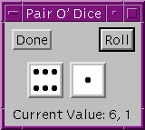

The following example incorporates ideas from the previous sections to show how you might approach the task of writing a compound widget. The widget is called CW_DICE, and it simulates a single six-sided die. Figure shows the appearance of XDICE, an application that uses two instances of CW_DICE. XDICE is discussed in Using CW_DICE in a Widget Program .
Example Code: The cw_dice. pro can be found in the lib subdirectory of the IDL distribution. xdice.pro can be found in the examples/doc/widgets subdirectory of the IDL distribution. Run this example procedure by entering cw_dice at the IDL command prompt or view the file in an IDL Editor window by entering .EDIT cw_dice.pro . You should examine these files for additional details and comments not included here. We present sections of the code here for didactic purposes—there is no need to re-create either of these files yourself.
The CW_DICE compound widget has the following features:
Almost any compound widget will have an associated state. The following information is used by an instantiation of the CW_DICE compound widget:
The first four items are stored in a per-widget structure kept in one of the child widget’s user values. Since the bitmaps never change, it makes sense to keep them in a COMMON block to be accessed freely by all the CW_DICE routines. It also makes sense to use a single random number seed for the entire CW_DICE class rather than one per instance to avoid the situation where multiple dice, having been created at the same time, have the same seed and thus display the same value on each roll.
Note: It is rare that the use of a COMMON block in a compound widget makes sense. Notice, however, that we are not storing widget state information, but read-only data (bitmaps) and data that can be overwritten at any time with no negative effects (random number generator seed). The use of a COMMON block in this situation means that the read-only data can be created once and used by any number of instantiations of the CW_DICE widget. See Managing Application State for a discussion of techniques (including the per-widget structure used here) you can use to store and access widget-specific state information.
Given the above decisions, it is now possible to write the CW_DICE procedure.
Example Code: The following sections discuss elements of the procedure’s source code, located in cw_dice.pro in the lib subdirectory of the IDL distribution. Run this example procedure by entering cw_dice at the IDL command prompt or view the file in an IDL Editor window by entering .EDIT cw_dice.pro .
In the CW_DICE function, beginning with function CW_DICE, parent, value, UVALUE=uvalue , notice that the code makes reference to two routines named CW_DICE_SET_VAL and CW_DICE_GET_VAL.
By using the FUNC_GET_VALUE and PRO_SET_VALUE keywords to WIDGET_BASE, WIDGET_CONTROL can call these routines whenever the user makes a WIDGET_CONTROL, SET_VALUE or GET_VALUE request. See the functions, cw_dice_set_val and cw_dice_get_val in the for details.
CW_DICE_SET_VALUE makes reference to a procedure named CW_DICE_ROLL that does the actual dice rolling. Rolling is implemented as follows:
The CW_DICE_ROLL procedure leads us to the event handler function, CW_DICE_EVENT. This event handler expects to see button press events generated from a user action as well as TIMER events from CW_DICE_ROLL. We only want to issue events for the button presses so if the tag name in the event structure is not WIDGET_TIMER, then create an event.
We can use CW_DICE to implement an application named XDICE. XDICE displays two dice as well as a “Roll” button. Pressing either die causes it to roll individually. Pressing the “Roll” button causes both dice to roll together. A text widget at the bottom displays the current value.
|
 |
Example Code:
xdice.
pro
can be found in the
examples/doc/widgets
subdirectory of the IDL distribution. Run this example procedure by entering
xdice
at the IDL command prompt or view the file in an IDL Editor window by entering
.EDIT xdice.pro
.